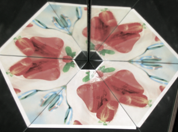
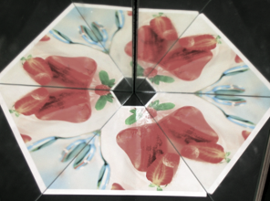
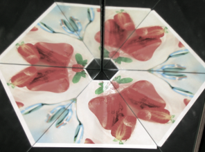
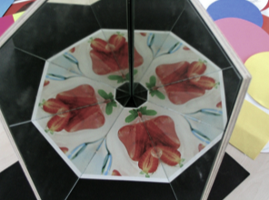

מה קורה כאשר מראה משתקפת במראה אחרת? ההדמיה שמימין מציגה שתי מראות מתמטיות. תוכלו לשלוט בגודל הזווית בין המראות באמצעות המחוון. האובייקט כולו משתקף שוב ושוב.
התמונה שנוצרת רגישה מאד לגודל הזווית בין שתי המראות. ההשתקפויות החוזרות מתאימות בצורה מדויקת זו לזו רק אם הזווית בין המראות היא מחלק של 180°. מצב זה נוצר עבור גדלי זוויות המהווים מחלקים של 180° דהיינו 90°, 60°, 45°, 36°, 30°, וכן הלאה.
|  |
|  |
תמונות של זוג מראות אמתיות עבור זוויות בנות 90°, 60°, 45° ו- 36° מעלות.